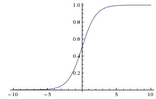

2. 激活函数
神经网络引入激活函数（Activation Function）主要是为了增强网络的非线性，提升网络的拟合能力和学习能力。激活函数有以下几个性质：
非线性
可微性
单调性：保证单层网络是凸函数
下面介绍 sigmoid 、tanh 以及 ReLU 。
2.1. sigmoid
sigmoid 函数的数学表达式如下：
其导数具有如下性质：
sigmoid 函数能够把输入的连续值压缩到 (0, 1) 范围内，其函数曲线如下：
{kind=link}
优点：
单调连续，输出范围有限，优化稳定
求导容易
缺点：
容易饱和。当输入很大/很小时（saturation, 饱和），神经元的梯度接近0，出现“梯度消失”（gradient vanishing），导致无法完成深层网络的训练。
输出不是零均值的（not zero-centered）。假设某个神经元的输入一直是正的，即 \(x>0\) . 对于 \(f(x)=w^{\top} x + b\) ，则 \(w\) 获得的梯度将是恒正或者恒负 （取决于 \(f\) 得到的梯度的符号），导致 \(w\) 的更新非常“曲折”（zig-zagging）。 当然，如果是按batch训练，最终梯度是各个样本下梯度的和，而每个样本下的梯度可能是符号各异的，因此在一定程度上可以缓解这个问题。
2.2. tanh
tanh 函数的数学表达式如下：
其函数曲线如下：

与 sigmoid 一样， tanh 也会产生饱和现象，但是 tanh 的输出是零均值的（zero-centered）。
2.3. ReLU
ReLU 函数的数学表达式如下：
其函数曲线如下：

优点：
避免梯度消失。
计算简单。 sigmoid 和 tanh 都需要计算指数。
收敛速度快。 Krizhevsky et al. 论文 指出 ReLU 收敛速度比 tanh 快6倍。

缺点:
容易产生死亡节点（dead ReLU）。一个非常大的梯度流过一个 ReLU 神经元，更新过参数之后，这个神经元对很多输入数据都输出0，则梯度一直为0。 当然 ReLU 的输出依靠 \(w\) 和 \(x\) 的共同作用，死亡节点可能会被重新激活。
输出不是零均值的。
LeakyReLU 可以有效应对上述缺点。
2.4. softmax 与最大化对数似然
对数似然之外的许多目标函数对 softmax 单元不起作用。本质原因：若目标函数中不使用对数抵消 softmax 中的指数，当指数函数的变量取非常小的负值时， 会造成梯度消失，从而无法学习。
当 softmax 单元的输入值之间差异变得极端时，softmax 的输出会饱和，因此许多基于 softmax 的代价函数也会饱和，除非它们能够转换饱和的激活函数（例如，取对数）。 特别是平方误差，对 softmax 单元来说，它是一个很差的损失函数。
2.5. 梯度消失与梯度爆炸
梯度消失（gradient vanishing）：梯度太小，难以确定参数更新方向。解决策略：
使用激活函数 ReLU（正部导数恒为 1）
Batch Normalization（将输出从饱和区拉到非饱和区）
残差网络
LSTM（long-short term memory networks）：遗忘门、输入门、输出门。
梯度爆炸（gradient exploding）：梯度太大，学习不稳定。解决策略：
梯度截断（gradient clipping/clamping）
权重正则化
使用激活函数 ReLU（正部导数恒为 1）
Batch Normalization（有正则化的作用）
2.6. 参考资料
CS231n
神经网络之激活函数(Activation Function)
What is the “dying ReLU” problem in neural networks?
详解机器学习中的梯度消失、爆炸原因及其解决方法